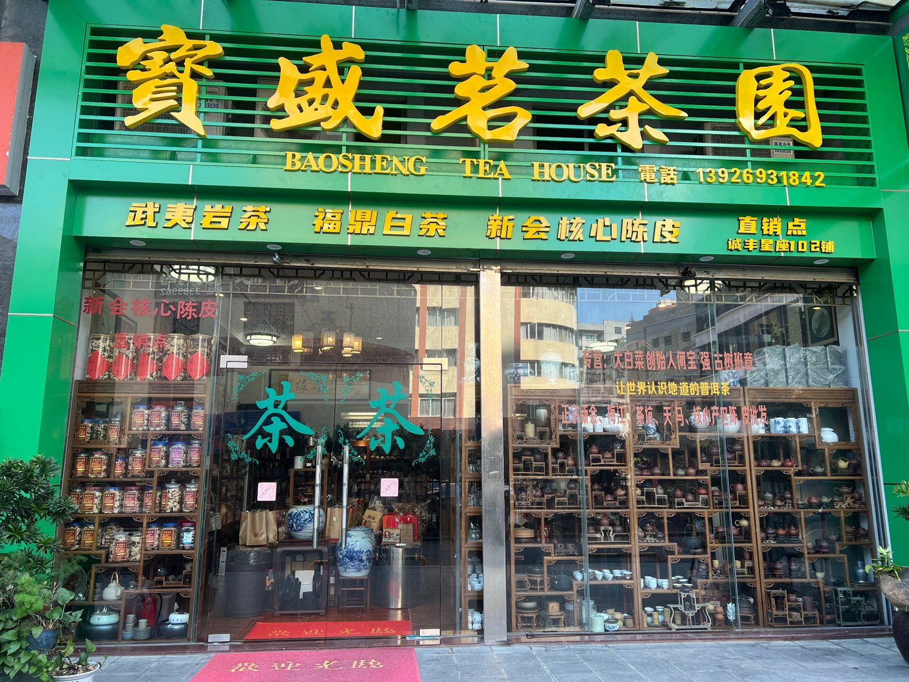
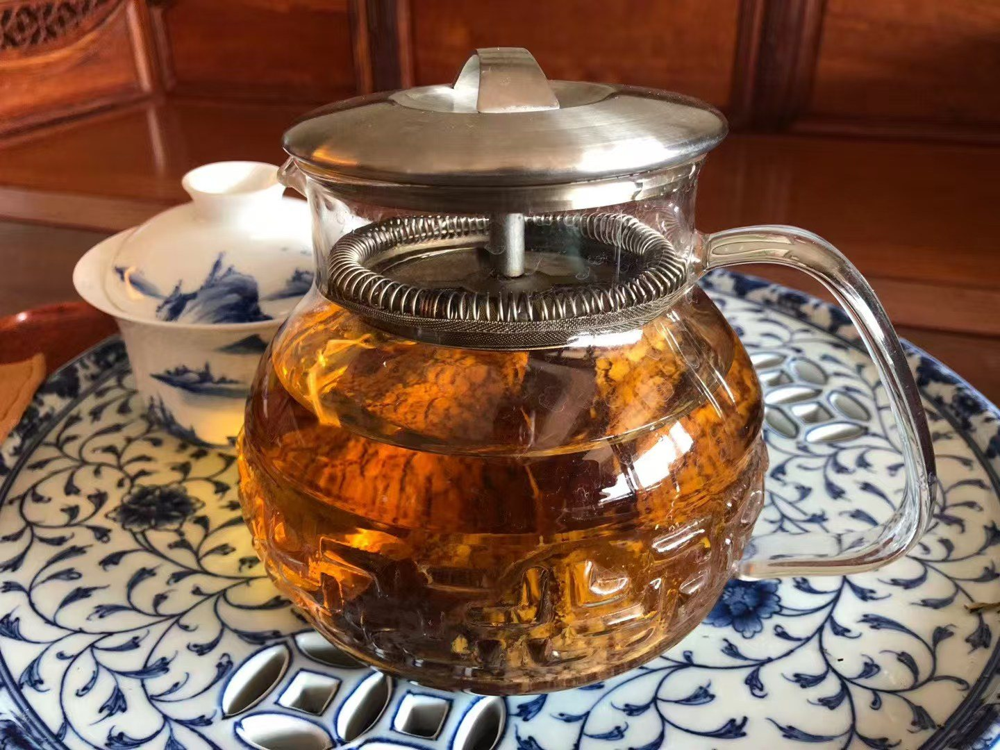

宝盛茗茶园 / 门店实拍
茶席实拍 / 一杯好茶，慢慢相识武夷岩茶·福鼎白茶·新会陈皮
02 / OUR CITRUS GROVE
我们的陈皮种植园
圈枝柑种植基地 · 实地照片
茶与陈皮 ↗
浏览产品照片、介绍与价格信息
04 / TEA JOURNAL茶叶知识 ↗
慢慢认识茶，也认识陈皮 · 内容后期补充

茶席实拍 / 一杯好茶，慢慢相识
宝盛茗茶园 / 门店实拍02 / OUR CITRUS GROVE
圈枝柑种植基地 · 实地照片
浏览产品照片、介绍与价格信息
04 / TEA JOURNAL慢慢认识茶，也认识陈皮 · 内容后期补充